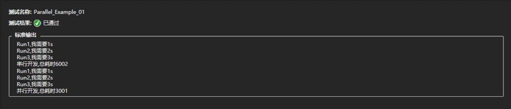
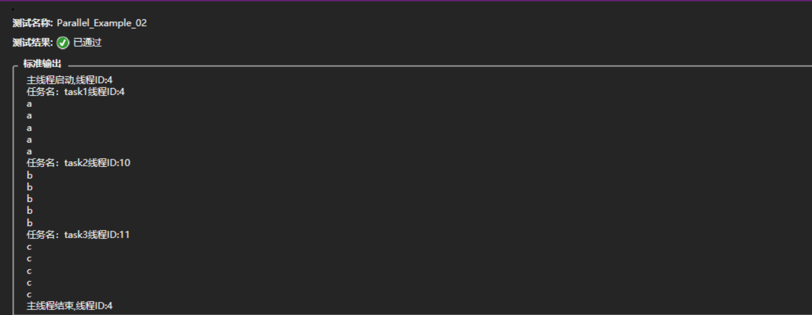
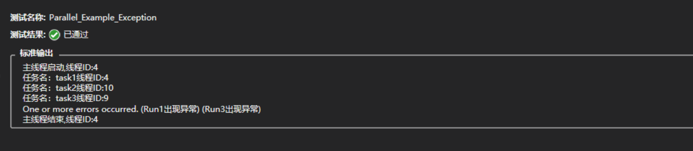
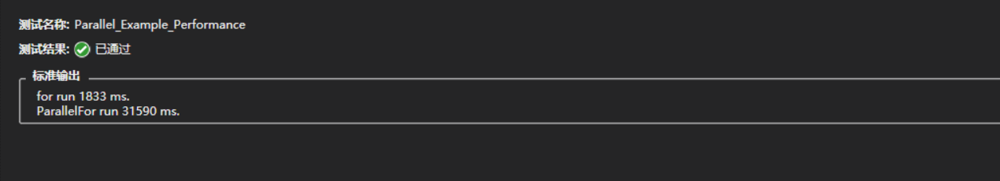

并行开发要做的事情就是将任务分摊给硬件线程去并行执行来达到负载和加速，传统的代码都是串行的，就一个主线程，为了实现加速而开了很多工作线程，这些工作线程就是软件线程。
Parallel
Parallel类是对线程的抽象，位于System.Threading.Tasks名称空间下,提供了任务和数据并行性.在Parallel下有三个常用的方法Invoke、For、ForEach，其中Parallel.Invoke用于任务并行性,Parallel.ForEach/Parallel.For用于数据并行性。
任务并行性
Parallel.Invoke
如果多个任务应并行运行，就可以使用Parallel.Invoke()方法将串行的代码并行化。
1 2 3 4 5 6 7 8 9 10 11 12 13 14 15 16 17 18 19 20 21 22 23 24 25 26 27 28 29 30 31 32 33 public void Parallel_Example_01 ({ var watch = Stopwatch.StartNew(); watch.Start(); Run1(); Run2(); Run3(); watch.Stop(); Console.WriteLine("串行开发,总耗时{0}" , watch.ElapsedMilliseconds); watch.Restart(); Parallel.Invoke(Run1, Run2, Run3); watch.Stop(); Console.WriteLine("并行开发,总耗时{0}" , watch.ElapsedMilliseconds); static void Run1 ( { Console.WriteLine("Run1,我需要1s" ); Thread.Sleep(1000 ); } static void Run2 ( { Console.WriteLine("Run2,我需要2s" ); Thread.Sleep(2000 ); } static void Run3 ( { Console.WriteLine("Run3,我需要3s" ); Thread.Sleep(3000 ); } Assert.IsTrue(true ); }
Run1(),Run()2,Run3()方法，这是串行的。而后使用Parallel.Invoke()将三个方法并行调用。
执行顺序
1 2 3 4 5 6 7 8 9 10 11 12 13 14 15 16 17 18 19 20 21 22 23 24 25 26 27 28 29 30 31 32 33 34 35 36 37 public void Parallel_Example_02 ({ Console.WriteLine("主线程启动,线程ID:{0}" , Thread.CurrentThread.ManagedThreadId); Parallel.Invoke( () => Run1("task1" ), () => Run2("task2" ), () => Run3("task3" )); Console.WriteLine("主线程结束,线程ID:{0}" , Thread.CurrentThread.ManagedThreadId); static void Run1 (string taskName { Console.WriteLine("任务名：{0}线程ID:{1}" , taskName, Thread.CurrentThread.ManagedThreadId); for (int i = 0 ; i < 5 ; i++) { Console.WriteLine("a" ); } } static void Run2 (string taskName { Console.WriteLine("任务名：{0}线程ID:{1}" , taskName, Thread.CurrentThread.ManagedThreadId); for (int i = 0 ; i < 5 ; i++) { Console.WriteLine("b" ); } } static void Run3 (string taskName { Console.WriteLine("任务名：{0}线程ID:{1}" , taskName, Thread.CurrentThread.ManagedThreadId); for (int i = 0 ; i < 5 ; i++) { Console.WriteLine("c" ); } } Assert.IsTrue(true ); }
Task可能是不同的线程去执行，也可能是相同的。主线程必须等Invoke中的所有方法执行完成后返回才继续向下执行。以后设计并行的时候，要考虑每个Task任务尽可能差不多，如果相差很大，比如一个时间非常长，其他都比较短，这样一个线程可能会影响整个任务的性能。这点非常重要(就是说Invoke会阻塞主线程)。
数据并行性
Parallel.For
Parallel.For是 for 的多线程实现，串行代码中也有一个for，但是那个for并没有用到多核。而Paraller.For它会在底层根据硬件线程的运行状况来充分的使用所有的可利用的硬件线程。
1 2 3 4 5 6 7 8 9 10 11 12 13 14 15 16 17 18 19 20 21 22 23 24 25 public void Parallel_Example_For ({ for (int i = 0 ; i < 3 ; i++) { ConcurrentBag<int > bag = new ConcurrentBag<int >(); var watch = Stopwatch.StartNew(); watch.Start(); for (int j = 0 ; j < 20000000 ; j++) { bag.Add(i); } watch.Stop(); Console.WriteLine("串行添加,总数20000000,耗时{0}" , watch.ElapsedMilliseconds); watch.Restart(); Parallel.For(0 , 20000000 , j => { bag.Add(j); }); watch.Stop(); Console.WriteLine("并行添加,总数20000000,耗时{0}" , watch.ElapsedMilliseconds); Console.WriteLine("***********************************" ); } Assert.IsTrue(true ); }
向一个线程安全的集合插入数据,使用串行的 for 耗时与使用并行的 Parallel.For 差异：
Parallel.ForEach
Parallel.ForEach 是 foreach 的多线程实现，都能对IEnumerable<T> 类型对象进行遍历。Parallel.ForEach的特殊之处在于它使用多线程来执行循环体内的代码段。
1 2 3 4 5 6 7 8 9 10 11 12 13 14 public void Parallel_Example_ForEach ({ ConcurrentBag<int > bag = new ConcurrentBag<int >(); Parallel.For(0 , 10 , j => { bag.Add(j); }); Console.WriteLine("集合总数:{0}" , bag.Count); Parallel.ForEach(bag, item => { Console.WriteLine(item); }); Assert.IsTrue(true ); }
中断
Parallel.For：添加ParallelLoopState参数，该实例提供了Break和Stop方法来帮助实现中断ParallelLoopState.Break()：在完成当前的这轮工作之后，不再执行后继的工作，但在当前这轮工作开始之前“已经在执行”的工作，则必须完成。但并不能执行完所有的循环ParallelLoopState.Stop()：不但不会再创建新的线程执行并行循环，而且当前“已经在执行”的工作也应该被中止
ParallelLoopState.Break()
1 2 3 4 5 6 7 8 9 10 11 12 13 14 15 16 17 18 19 20 public void Parallel_Example_For_Break ({ int maxCount = 1000 ; ConcurrentBag<int > bag = new ConcurrentBag<int >(); var watch = Stopwatch.StartNew(); watch.Start(); Parallel.For(0 , 2000 , (j, state) => { if (bag.Count == maxCount) { state.Break(); return ; } bag.Add(j); }); watch.Stop(); Console.WriteLine("集合元素个数{0}" , bag.Count); Assert.AreEqual(maxCount, bag.Count); }
ParallelLoopState.Stop()
1 2 3 4 5 6 7 8 9 10 11 12 13 14 15 16 17 18 19 20 21 public void Parallel_Example_For_Stop ({ int maxCount = 1000 ; ConcurrentBag<int > bag = new ConcurrentBag<int >(); for (int j = 0 ; j < 5 ; j++) { bag = new ConcurrentBag<int >(); Parallel.For(0 , 2000 , (i, state) => { if (bag.Count == maxCount) { state.Stop(); return ; } bag.Add(i); }); Console.WriteLine("集合元素个数{0}" , bag.Count); Console.WriteLine("*************************************************" ); Assert.AreEqual(maxCount, bag.Count); } }
注意
Stop仅仅通知其他迭代尽快结束，而Break不仅通知其他迭代尽快结束，同时还要保证退出之前要完成LowestBreakIteration之前的迭代。 例如，对于从 0 到 1000 并行迭代的for循环，如果从第 100 此迭代开始调用Break，则低于 100 的所有迭代仍会运行，从 101 到 1000 的迭代则不必要。而调用Stop方法不保证低于 100 的所有迭代都会运行。
异常处理
任务是并行计算的，处理过程中可能会产生n多的异常。
Exception
Exception是可以捕获到两个异常的。
1 2 3 4 5 6 7 8 9 10 11 12 13 14 15 16 17 18 19 20 21 22 23 24 25 26 27 28 29 30 31 32 33 public void Parallel_Example_Exception ({ Console.WriteLine("主线程启动,线程ID:{0}" , Thread.CurrentThread.ManagedThreadId); try { Parallel.Invoke(() => Run1("task1" ), () => Run2("task2" ), () => Run3("task3" )); } catch (Exception ex) { Console.WriteLine(ex.Message); } Console.WriteLine("主线程结束,线程ID:{0}" , Thread.CurrentThread.ManagedThreadId); static void Run1 (string taskName { Console.WriteLine("任务名：{0}线程ID:{1}" , taskName, Thread.CurrentThread.ManagedThreadId); throw new Exception("Run1出现异常" ); } static void Run2 (string taskName { Console.WriteLine("任务名：{0}线程ID:{1}" , taskName, Thread.CurrentThread.ManagedThreadId); } static void Run3 (string taskName { Console.WriteLine("任务名：{0}线程ID:{1}" , taskName, Thread.CurrentThread.ManagedThreadId); throw new Exception("Run3出现异常" ); } Assert.IsTrue(true ); }

AggregateException
1 2 3 4 5 6 7 8 9 10 11 12 13 14 15 16 17 18 19 20 21 22 23 24 25 26 27 28 29 30 31 32 33 34 35 36 37 38 public void Parallel_Example_AggregateException ({ Console.WriteLine("主线程启动,线程ID:{0}" , Thread.CurrentThread.ManagedThreadId); try { Parallel.Invoke(() => Run1("task1" ), () => Run2("task2" ), () => Run3("task3" )); } catch (AggregateException ex) { foreach (var item in ex.InnerExceptions) { Console.WriteLine(item); } } static void Run1 (string taskName { Console.WriteLine("任务名：{0}线程ID:{1}" , taskName, Thread.CurrentThread.ManagedThreadId); throw new Exception("Run1出现异常" ); } static void Run2 (string taskName { Console.WriteLine("任务名：{0}线程ID:{1}" , taskName, Thread.CurrentThread.ManagedThreadId); } static void Run3 (string taskName { Console.WriteLine("任务名：{0}线程ID:{1}" , taskName, Thread.CurrentThread.ManagedThreadId); throw new Exception("Run3出现异常" ); } Console.WriteLine("主线程结束,线程ID:{0}" , Thread.CurrentThread.ManagedThreadId); Assert.IsTrue(true ); }
Invoke方法中调用了一个产生异常的方法，但是结果显示异常并不会影响其它方法及主线程的执行。
Parallel.For肯定快吗?
在实现多线程时，为了防止多个线程同时处理同一个变量而导致变量处于"薛定谔状态"，引入了"锁"的概念，即在每一时刻只有获得"锁"的线程才能操作目标变量。如果在Parallel.For中也需要操作一个全局变量，就意味着即使这是并行计算，大家也需要排队操作全局变量，此时Parallel.For可能远远不如传统的for循环来的快。
1 2 3 4 5 6 7 8 9 10 11 12 13 14 15 16 17 18 19 20 21 22 23 24 25 26 27 28 29 30 31 32 33 34 public void Parallel_Example_Performance ({ Stopwatch stopWatch = new Stopwatch(); var obj = new object (); long num = 0 ; stopWatch.Start(); for (int i = 0 ; i < 10000 ; i++) { for (int j = 0 ; j < 60000 ; j++) { num++; } } stopWatch.Stop(); Console.WriteLine("for run " + stopWatch.ElapsedMilliseconds + " ms." ); stopWatch.Reset(); stopWatch.Start(); Parallel.For(0 , 10000 , item => { for (int j = 0 ; j < 60000 ; j++) { lock (obj) { num++; } } }); stopWatch.Stop(); Console.WriteLine("ParallelFor run " + stopWatch.ElapsedMilliseconds + " ms." ); Assert.IsTrue(true ); }

ParallelOptions类
属性
描述
CancellationToken
获取或设置与此 ParallelOptions 实例关联的 CancellationToken
MaxDegreeOfParallelism
获取或设置此 ParallelOptions 实例所允许的并发任务的最大数目